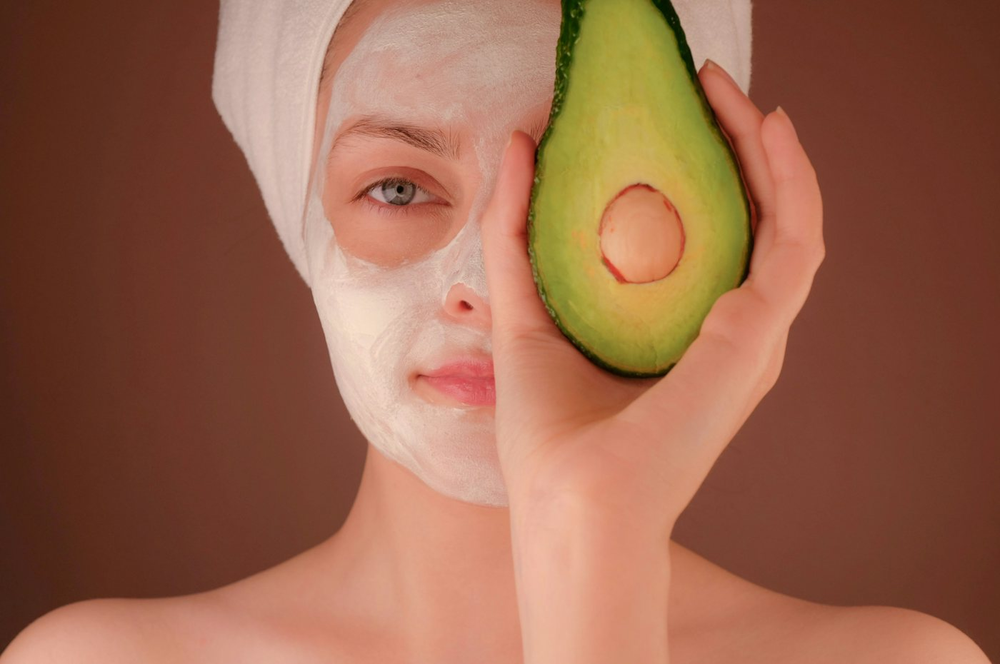
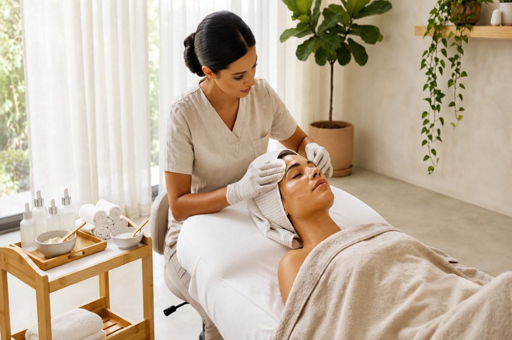

Limpeza de pele
Extração cuidadosa, máscara calmante e orientação de rotina para casa.
Savassi, Belo Horizonte · Desde 2014
Limpeza de pele, peelings, laser, toxina e preenchimento, feitos por profissionais habilitadas e com produtos registrados na Anvisa.
Agendar avaliação
Extração cuidadosa, máscara calmante e orientação de rotina para casa.
Químicos e de diamante, para manchas, textura e viço.
Aplicação conservadora, com retorno em quinze dias para ajuste.
Ácido hialurônico para lábios, olheiras e contorno, em pequenas quantidades.
Resultado natural é aquele que ninguém percebe que foi feito
Quarenta minutos com a biomédica, com análise de pele e fotos.
Você recebe as etapas, os intervalos e os valores. Sem pacote obrigatório.
Feito com calma, explicando cada passo.
Quinze dias depois, para acompanhar o resultado e ajustar.

10anos de clínica
Boa parte das nossas clientes está conosco desde o primeiro ano.
12 milprocedimentos realizados
Uma equipe de seis profissionais, todas com pós-graduação na área.
86%das clientes voltam em até seis meses
Retorno gratuito quinze dias depois de cada procedimento injetável.

Pós-graduada em estética avançada, com dez anos de experiência em injetáveis.

Especialista em peles sensíveis e acneicas.
Respondemos pelo WhatsApp no mesmo dia e encontramos um horário que caiba na sua semana.